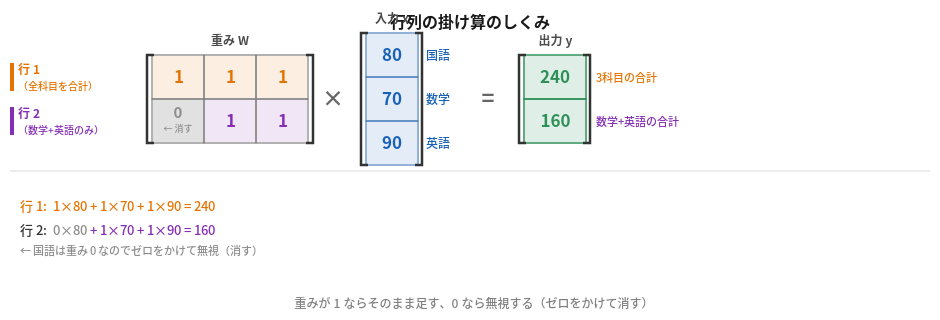

rocBLAS につながるやさしい入門
A gentle introduction connected to rocBLAS
「線形代数」と聞くとむずかしく聞こえますが、AI や GPU の世界では「数をまとめて変換する道具」として活躍しています。このページでは、ベクトル・行列・行列積を、できるだけイメージで説明します。その先に rocBLAS が何をしているのか、なぜ GPU が強いのかをつなげます。
Linear algebra sounds intimidating, but in the world of AI and GPUs it is simply a tool for transforming groups of numbers together. This page explains vectors, matrices, and matrix multiplication through images and analogies, then connects them to what rocBLAS does and why GPUs excel at this work.
このページで伝えたいことは、5行でまとめられます。
Everything this page wants to convey fits in five points.
数字を一列にならべたもの
A row of numbers
変換ルールを書いた表
A table of transformation rules
数字の並びを別の形に変えること
Changing one arrangement of numbers into another
この計算を大量に並列でこなす
Runs masses of this computation in parallel
AMD GPU で行列計算を高速化するライブラリ
The library that accelerates matrix computation on AMD GPUs
ベクトルは、数字を一列にならべたものです。
A vector is simply a row of numbers.
たとえば、ある生徒のテスト結果を「国語80・数学70・英語90」とするとき、これを $\mathbf{x} = \begin{pmatrix} 80 \\ 70 \\ 90 \end{pmatrix}$ と書きます。これがひとつのベクトルです。
For example, a student's test scores — Japanese 80, Math 70, English 90 — can be written as $\mathbf{x} = \begin{pmatrix} 80 \\ 70 \\ 90 \end{pmatrix}$. That is one vector.
AI の世界では、画像・音・文章の特徴も最終的には数字の並びとして扱います。ベクトルはその基本単位です。
In AI, the features of images, sounds, and text are all ultimately treated as rows of numbers. The vector is the basic building block.
行列は、数字を表の形にしたものです。ただの数の羅列ではなく、「変換のルールを書いた表」として使います。
A matrix is numbers arranged in a table. Think of it not as a random collection of numbers, but as a table of transformation rules.
たとえば、テストの点数に「各科目の重み」をかけて「全部の評価」と「理系評価」を出すとき、その重みの組み合わせが行列 $W$ になります。
For example, if you weight test scores differently to produce a “humanities score” and a “science score,” those weighting combinations form a matrix $W$.
同じ材料でも、レシピが違えば違うものができます。行列の「中身」が変われば、変換の意味も変わります。
The same ingredients make different things depending on the recipe. Change the numbers in the matrix and the transformation changes meaning.
「行列をかける」とは、入力の数字の並びを別の形に変えることです。
Multiplying by a matrix means changing one arrangement of numbers into a different arrangement.
出力の各要素は、行列の 1 行分の重み と、入力ベクトルの 対応する要素 を掛けて、すべて足し合わせたものです。行が変われば出力も変わります。
Each output value is produced by taking one row of the matrix, multiplying it element-by-element with the input vector, and summing everything up. Change the row, and you get a different output.

数式で確認：
$$y_1 = 1 \times 80 + 1 \times 70 + 1 \times 90 = 80 + 70 + 90 = \mathbf{240} \;\text{（3 科目の合計点）}$$ $$y_2 = 0 \times 80 + 1 \times 70 + 1 \times 90 = 0 + 70 + 90 = \mathbf{160} \;\text{（数学と英語の合計）}$$行列の中身（どの行にどの重みを書くか）を変えれば、同じ入力から好きな集め方の出力が作れます。
Written as equations:
$$y_1 = 1 \times 80 + 1 \times 70 + 1 \times 90 = 80 + 70 + 90 = \mathbf{240} \;\text{(total of all three subjects)}$$ $$y_2 = 0 \times 80 + 1 \times 70 + 1 \times 90 = 0 + 70 + 90 = \mathbf{160} \;\text{(Math + English only)}$$Change what numbers go in each row of the matrix, and you get a different way of combining the same inputs.
ニューラルネットワーク（AI のよくある形）は、大ざっぱに言うと 「行列で変換する」をひたすら繰り返す機械です。
A neural network — the most common form of AI — is, roughly speaking, a machine that applies matrix transformations over and over again.
たとえば画像認識の場合、
For example, in image recognition:
この「少しずつ見方を変えていく」作業が、行列積のくり返しです。だから線形代数は AI の土台です。
This process of gradually shifting perspective is repeated matrix multiplication. That is why linear algebra is the foundation of AI.
行列変換を何段も重ねることで、ピクセルが「猫か犬か」という判断に変わる
Stacking many matrix transforms turns raw pixels into a "cat vs dog" judgment
行列計算は「同じような計算を膨大な数くり返す」作業です。GPU はその並列処理が得意です。
Matrix computation means repeating very similar arithmetic an enormous number of times. GPUs are built exactly for that kind of parallel work.
複雑な判断が得意。でも同じ計算を何万回も繰り返すのは向いていない。
Good at complex decisions and varied tasks. But repeating the same calculation tens of thousands of times is not its strength.
シンプルな計算を何千個も一度に並べる。行列積はまさにこの形。
Runs thousands of simple calculations simultaneously. Matrix multiplication is exactly this shape of work.
BLAS（Basic Linear Algebra Subprograms）は、ベクトルや行列の基本計算をまとめた「関数の仕様セット」です。何十年も前から使われてきた標準です。
BLAS (Basic Linear Algebra Subprograms) is a set of standard function interfaces for vector and matrix arithmetic that has been in use for decades.
rocBLAS は、その AMD GPU 向け実装です。$C = \alpha A B + \beta C$ のような行列演算を高速に実行します。ここでいう GEMM は、むずかしい名前に見えますが、要するに「大きな表どうしの掛け算」です。
rocBLAS is AMD's GPU implementation of those interfaces. It runs operations like $C = \alpha A B + \beta C$ (GEMM = General Matrix Multiply) at full GPU speed.
PyTorch や TensorFlow などの AI フレームワークは、内部で rocBLAS を呼び出してこの計算をこなしています。
AI frameworks like PyTorch and TensorFlow call rocBLAS internally to handle this computation.
アプリが行列計算をリクエストすると、ROCm を通じて rocBLAS が GPU に仕事を渡す
When an application requests matrix computation, rocBLAS receives it through ROCm and hands it to the GPU
gfx900 は Vega 世代（2017年）の GPU です。最近の GPU が持っている、行列計算を一気に速くする専用の近道を一部持っていません。名前で言うと xdlops や dot4 です。
gfx900 is the Vega-generation GPU from 2017. It does not have the dedicated matrix arithmetic instructions (xdlops / dot4) that newer GPUs have.
そのため、最新の高速パスは使えませんが、ROCm の「能力確認＋フォールバック」設計により、汎用的な行列計算は今もちゃんと動きます。rocBLAS には gfx900 向けにコンパイル済みの行列カーネルが 128 本収録されており、ROCm 7.2 に同梱されています。
The newest fast paths are therefore unavailable, but thanks to ROCm's "capability check + fallback" design, general-purpose matrix computation still works correctly. rocBLAS ships 128 pre-compiled matrix kernels for gfx900 with ROCm 7.2.
最新の工場には「超高速の専用機械」がありますが、gfx900 にはありません。でも「汎用の手順」で同じ仕事はできます。少し遅くなりますが、結果は正しく出ます。つまり 新しい近道は減っても、基本の道はまだ残っている ということです。
The newest factories have ultra-fast specialized machines that gfx900 lacks. But the work can still be done using general-purpose methods — somewhat slower, but with correct results. In other words, some newer shortcuts disappear, but the basic road still remains.
線形代数の基本概念から rocBLAS までのつながり
The chain from basic linear algebra concepts to rocBLAS